This is the complete operating manual for PatchCraft Studio and the PatchCraft Player. It teaches the full path from a blank idea to a sellable, branded instrument: sound design, sample mapping, MIDI performance, DSP routing, GUI design, Player branding, preset packs, one-shot packs, exports, licensing, and customer-facing delivery.
PatchCraft Studio opens on the guided Workflow page. Treat this as the command center: build sound, design the Player UI, package presets, prove runtime behavior, then launch.
Core rule: PatchCraft is not only a GUI designer and it is not only a synth. A finished product is a playable patch plus a Player interface plus presets plus branding plus export metadata. If any part is missing, the buyer experience feels incomplete.
The PatchCraft Mental Model
Most confusion disappears when the project model is clear. PatchCraft has a single source of truth for the sound, and the visible UI only controls that sound. Do not think of the Design page as the instrument itself. Think of it as the customer-facing control surface for the instrument.
Project
The Studio file you are editing. It stores engine type, canvas size, layout, samples, DSP graph, presets, branding, licensing, exports, and library references.
Patch
A complete playable sound state: DSP graph, sample map, MIDI/performance pattern, parameter values, mappings, and metadata.
Preset
A named user-facing sound choice. In PatchCraft, a serious preset should point to a full Patch, not just a handful of knob values.
Expansion
A curated collection of presets, patches, samples, artwork, metadata, and categories that can be sold or installed as add-on content.
Player
The VST3/runtime your buyer opens in a DAW. It loads the exported pack, renders your designed UI, responds to MIDI, and exposes mapped controls.
One Shot Pack
A commercial sample pack created from rendered audio. It can stay as a pack or be sent into the Sample Mapper to become a playable instrument.
The source-of-truth chain
Sound source
Synth oscillator, wavetable, sample zone, drum pad, live FX input, or imported one-shot output.
DSP graph
Source, Filter, Amp, Mod, FX, and Out blocks define how sound is produced, shaped, modulated, processed, and delivered.
Parameters
Every meaningful control needs a real parameter with range, unit, default value, smoothing, automation support, and MIDI-learn behavior.
Layout controls
Knobs, sliders, switches, meters, pads, dropdowns, tabs, containers, macros, matrices, and visual elements are bound to those parameters.
Preset capture
Save the full playable state as a patch/preset. If the preset does not change the sound, it is not ready to ship.
Export proof
Open the exported Player or VST3 in a DAW and confirm the exact customer-facing runtime matches Studio.
PatchCraft App Map
PatchCraft has a top toolbar, canvas controls, section tabs, side panels, and a bottom workspace. The same project can move between sound-building, UI design, sample work, MIDI performance, branding, and launch without changing applications.
The selected section tab decides what editor appears here.
Top toolbar button reference
Button
What it does
Best practice
New
Starts a fresh PatchCraft project.
Save the current project first. Choose the product path before designing heavily.
Open
Loads an existing project or demo pack.
Use factory demos to study finished layouts and parameter mappings.
Save
Saves the full project state.
Save after importing artwork, grouping layers, mapping samples, and capturing patches.
Import Samples
Adds audio files into the project/sample workflow.
Name files clearly: instrument_note_velocity_rr.wav makes automap more reliable.
Import BG
Adds a background image to the canvas.
Use clean artwork without baked-in knobs if you want controls to remain editable.
AI Assist
Opens local/cloud assistant actions for layout, sound recipe, copy, checklist, and critique.
Use it for suggestions, not as a substitute for testing the exported Player.
Preview
Starts/stops Studio preview audio.
Use Preview while mapping controls to confirm changes affect sound immediately.
Export Pack
Exports a runtime pack or VST3 product.
Run Launch health checks first, then export and test in the actual DAW.
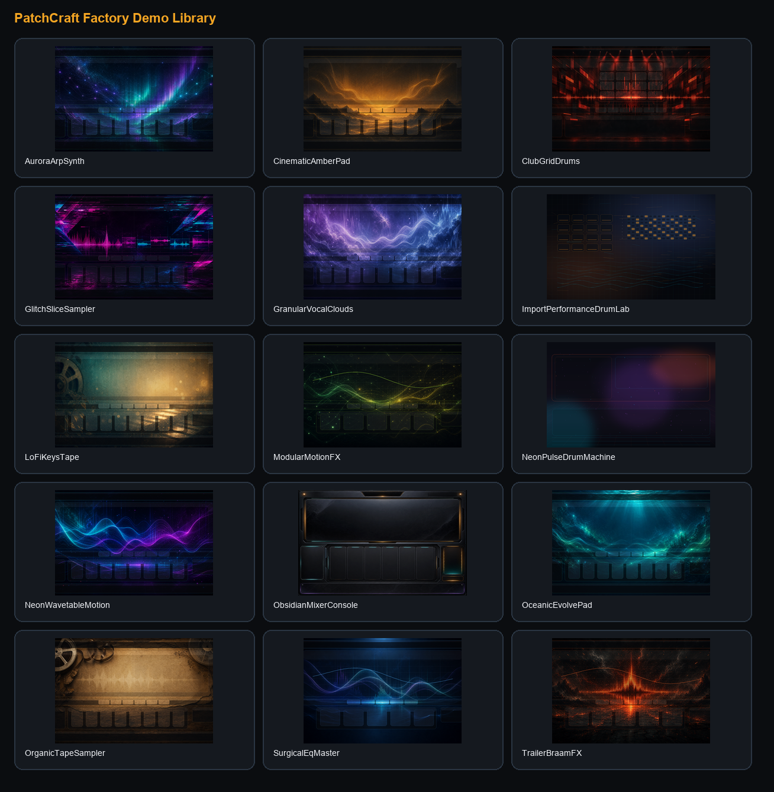
Factory demos are study material. Open them to learn how a finished synth, sampler, drum machine, FX instrument, granular instrument, and mixer-style Player are structured.
Quick Start: Build One Complete Instrument
This is the shortest reliable path to a product that makes sense. Use it before attempting advanced hybrid instruments.
Choose a product path
Open Workflow and choose Synth Instrument, Sample Instrument, Drum Machine, or FX Plugin. This keeps engine, sample tools, DSP defaults, and export validation pointed at the right target.
Build the sound first
Go to DSP for synth/FX sound design, Samples for sample instruments and drums, or One Shot for rendered source material. Get an audible result before styling the UI.
Create controls that matter
Go to Design. Add knobs, sliders, switches, pads, dropdowns, meters, macro controls, and containers. Assign each control to a real parameter. If a control does not change sound or useful UI state, remove it or gray it out.
Test while holding notes
Use Preview/Test and a MIDI keyboard. Turn controls while audio is playing. A sellable instrument needs real-time response without obvious zipper noise, clipping, or silence.
Capture a full patch
Use Save Patch/Save Patch As from DSP/Design workflows. A patch should store DSP graph, sample zones, MIDI state, parameter values, and mappings.
Create presets
Make several named presets from complete patches. Use categories your buyers understand: Pads, Bass, Plucks, Motion, Drums, FX, Leads, Keys, Atmospheres.
Brand the Player
Open Brand Lab. Set product name, logo, tagline, colors, Player toolbar behavior, library visibility, import options, and customer-facing text.
Run Launch health checks
Open Launch. Fix missing mappings, missing assets, export-blocking DSP issues, license fields, Plugin.club configuration, and metadata gaps.
Export and test in DAW
Export, load in FL Studio or another target DAW, confirm MIDI input, tab switching, preset loading, labels, Player toolbar, mixer, sample drag/drop, and automation/MIDI Learn.
Workflow Page: Command Center
The Workflow page is the high-level path from product type to launch. It keeps the project centered on one playable Patch instead of scattered edits.
The Workflow page exists to prevent random building. It answers: what product are you making, what stage are you in, and is the project healthy enough to export?
Product Path
The Product Path sets expectations for the engine and export. Choose carefully:
Synth Instrument: oscillator/wavetable-driven instrument with modulations, filters, amp, effects, performance controls, and presets.
Sample Instrument: keymapped or pad-based sampler with sample zones, velocity layers, round robin, one-shots, loops, and sample editing.
Drum Machine: pad grid, pattern grid, drum tracks, mixer lanes, pad highlights, MIDI/pad triggering, and pattern playback.
FX Plugin: incoming DAW audio processed through designed effects, performance throws, EQ, modulation, delay, reverb, stutter, or utility processing.
Guided Launch Path
The guided path gives you a sequence: Build Sound, Perform, Design Player, Package Presets, Prove Runtime, Launch. Each stage should produce a real artifact, not just a visual change.
Rule: If you cannot play it, map it, save it, reload it, and export it, it is not finished.
Design Page: Build the Customer-Facing Instrument
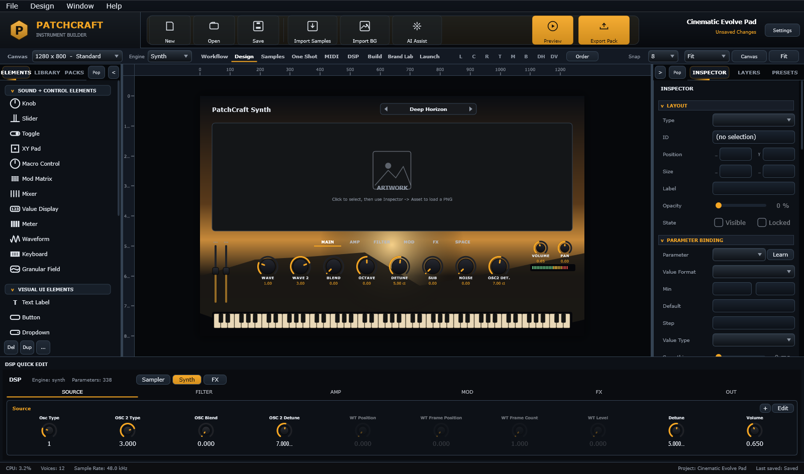
The Design page is where the Player UI is created: canvas, elements, layers, inspector, library assets, containers, tabs, and parameter assignments.
The Design page is where you build the interface your customer touches. It is Photoshop-like in spirit, but every serious element should connect to sound, performance, navigation, or product clarity.
Canvas
The canvas is the Player body. Canvas size defines the product dimensions. Changing canvas size affects how the Player layout fits, so choose a size early. Use grid, snap, zoom, and fit to work cleanly.
Elements panel
The Elements panel is divided by function:
Sound + Control Elements: knobs, sliders, switches, dropdowns, XY pads, macro controls, mod matrix, meters, waveform, granular field.
Layers control order, groups, folders, visibility, selection, and organization. Use groups for sections such as Main, Filter, FX, Motion, Mixer, Performance, or Branding. Selected canvas objects should map to selected layers. Use layer search when the design becomes dense.
Library panel
The Library contains Backgrounds, Templates, and Assets. Assets should be draggable onto the canvas. Use it to reuse knobs, sliders, meters, panel treatments, templates, and finished UI chunks.
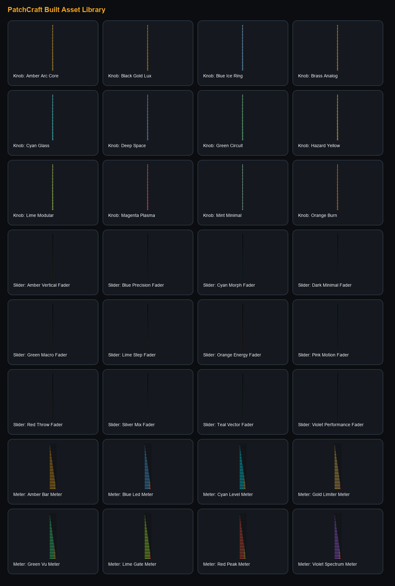
The asset library gives developers reusable control styles. A professional product should use a small, consistent set of controls rather than random knobs from different visual languages.
Inspector
The Inspector edits the selected element. Its most important jobs are:
DSP Assignment: connect this UI element to a parameter, macro, modulation route, sample control, MIDI action, or Player action.
Connecting knobs to sound
Add or select a parameter in DSP Builder, Sample Mapper, or the parameter registry.
Add a knob/slider/switch/dropdown on the Design canvas.
Select the element and open the Inspector DSP Assignment area.
Choose the target parameter. Confirm the label and value display make sense.
Press Preview, hold a note, and move the control.
For scripted behavior, open pScript Automation and add a when knob "Name" moves: event for that parameter.
If nothing changes, check whether the parameter is enabled, mapped, grayed out, blocked by engine type, or not connected in the DSP graph.
Tabs and containers
Tabbed containers let one Player screen show many pages: Main, Amp, Filter, Mod, FX, Space, Mixer, Perform, Import. Add controls inside the correct tab group. If controls appear on every tab, they are probably outside the tab container. If you want one control to appear on every tab, copy it to all tabs or use copy-as-reference when you want one edit to update every copy.
Design best practices
Every section needs a title and a clear reason to exist.
Use switches for on/off states, not knobs.
Use labels that tell the buyer what the control does: Cutoff, Body, Drift, Space, Bite, Width.
Use meters and visual feedback where performance is happening.
Keep the most important performance controls large and close to the center.
Do not bury critical playback, preset, or import controls inside obscure tabs.
Sample Mapper: Build Playable Sample Instruments
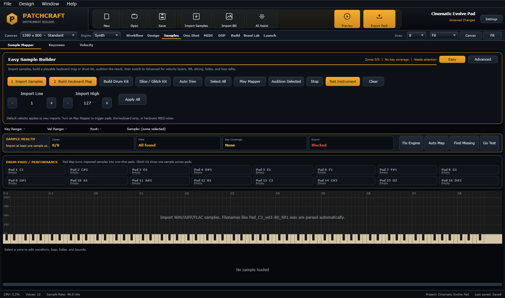
The Sample Mapper handles imported audio, easy keyboard maps, drum kits, glitch slicing, zone health, performance pads, and advanced zone editing.
The Sample Mapper turns audio files into playable zones, pads, one-shot kits, chopped performances, and sample-based instruments. It has Easy and Advanced workflows so beginners can map quickly and advanced developers can edit zones deeply.
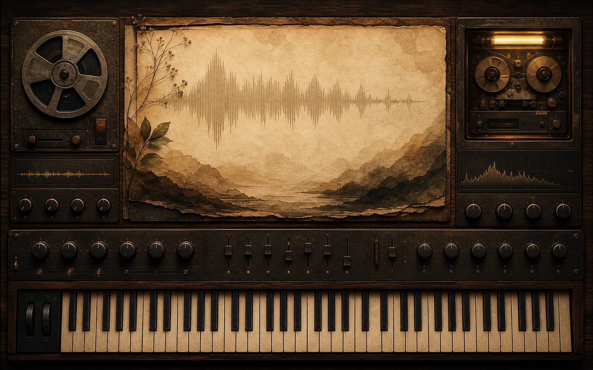
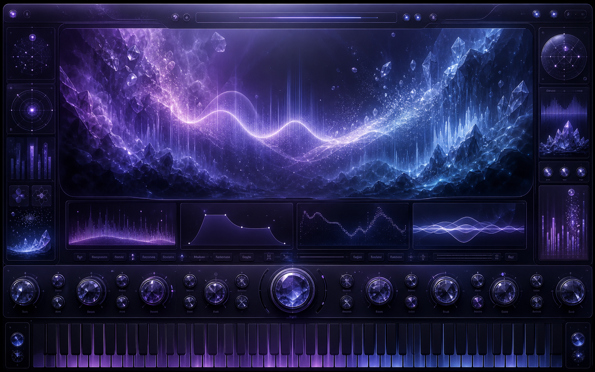
Easy Sample Builder
Import Samples: bring in WAV, AIFF, FLAC, and supported audio files.
Build Keyboard Map: map samples across keys using filename, metadata, pitch detection, and fallback rules.
Build Drum Kit: assign one-shots to pads by filename and drum-role detection.
Slice / Glitch Kit: slice a selected sample into pads for stutter, chop, and performance instruments.
Auto Trim: remove silence from selected samples or all samples if nothing is selected.
Select All: select every zone before batch editing, trimming, deleting, or applying defaults.
Advanced zone editing
Advanced mode is where you edit the actual sample map. A zone normally has root key, low key, high key, low velocity, high velocity, round-robin group, choke group, start/end bounds, fades, gain, pan, loop state, one-shot state, reverse, and playback rules.
Control
Meaning
Use it for
Root
The pitch the sample was recorded at.
Keeping mapped notes in tune.
Low/High Key
The key range that triggers the zone.
Stretching one sample across keys or placing many samples chromatically.
Velocity Low/High
The velocity range that triggers the zone.
Soft, medium, hard, and accent layers.
Round Robin
Alternate samples for repeated notes.
More realistic drums, plucks, keys, and repeated hits.
One Shot
Sample plays through without requiring note hold.
Drums, FX hits, braams, risers, impacts.
Fade In/Out
Smooths start/end boundaries.
Removing clicks, harsh starts, and cutoffs.
Loop
Repeats a region while note is held.
Sustains, pads, textures, granular beds.
Choke Group
One sample stops another.
Closed/open hats, cymbal control, phrase cutoffs.
Best sample naming
Good filenames make automap stronger. Use consistent naming:
Samples are triggered by MIDI notes or pads. MIDI Playground can generate the notes, patterns, probability, gates, slices, and sample-control movement. DSP Builder shapes the resulting audio with filters, amp, modulation, FX, and output processing. A sample instrument becomes powerful when the sample map, MIDI pattern, and DSP graph are designed together.
Common sample workflows
Keyboard instrument: import tuned notes, automap root keys, build velocity layers, add amp envelope, filter, tone controls, and presets.
Glitch kit: import a loop or phrase, slice to pads, map MIDI patterns, add stutter, reverse, start/length controls, delay/reverb throws.
Granular instrument: import long textures/vocals, create sample zones, add granular field, position, density, direction, spread, freeze, motion, and audio-reactive visuals.
One Shot Maker: Capture, Edit, Package
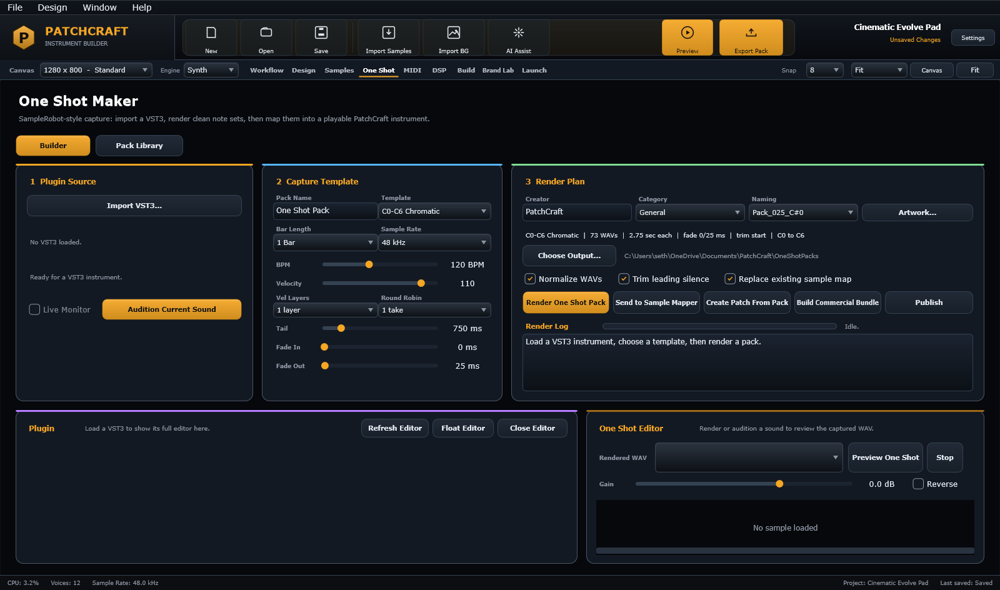
The One Shot Maker is the capture and pack-building workflow: plugin/source capture, render templates, editing, metadata, artwork, packaging, and publishing.
The One Shot Maker is for creating commercial one-shot packs and sample sources from plugins or rendered sounds. It is inspired by tools like SampleRobot, but focused on creating sellable PatchCraft-ready packs.
Core workflow
Import a plugin or source.
Open or float the plugin editor to choose sounds.
Enable live audition so MIDI hardware and the preview keyboard can trigger the plugin.
Choose a render template: root only, octave notes, C0-C6, drum pads, velocity layers, or round robin passes.
Set bar length, tail, fade in, fade out, sample rate, naming, artwork, metadata, and output folder.
Render the one-shot pack.
Review each file in the editor: trim, fade, normalize if needed, reject bad renders.
Send to Sample Mapper, create a Patch from the pack, export a commercial bundle, or publish a draft.
Round robin and velocity layers
Use multiple passes when you want realistic performance. Velocity layers capture soft/medium/hard intensity. Round robin captures small variations for repeated notes. For drums, this is critical. For pads, it is usually less important.
Artwork and packaging
Commercial one-shot packs need clear artwork, pack name, creator name, category, tags, description, license terms, and file organization. Think like a seller: the buyer should understand what the pack is before opening a single file.
MIDI Playground: Musical Control, Not Random Notes
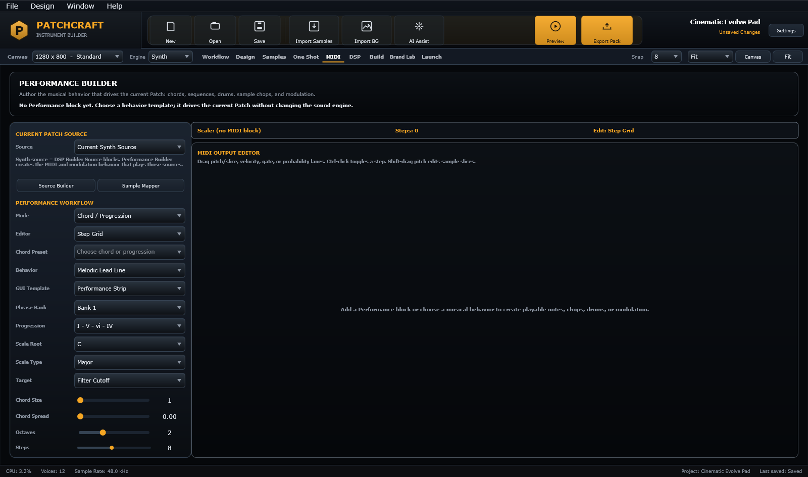
MIDI Playground is the performance and phrase system: chord logic, rhythm grids, drum patterns, piano roll editing, sample control, and exported MIDI.
MIDI Playground is the performance brain. It creates and edits musical data that can trigger synth voices, sample zones, drum pads, slices, and performance effects. Its value is not random generation; its value is musical constraint, transformation, and real integration with sound.
The piano roll is for traditional notes, chords, progressions, length, velocity, and editing. The grid is for drum machines, patterns, probability, trap divisions, and performance-style step editing. Use both when building modern instruments: piano roll for harmonic material, grid for rhythm and pattern behavior.
How MIDI impacts sound
MIDI can trigger notes, choose sample slices, change sample start, control velocity layers, switch patterns, drive DSP modulation, trigger arpeggiators, automate macros, and export clips. If the MIDI page feels disconnected, check whether the MIDI output is routed to the active sound source, sample map, drum pads, or DSP modulation target.
Musical generation rules
Use scale and root as hard constraints.
Use curated chord progressions instead of fully random notes.
Limit mutation depth so generated results remain usable.
For drums, use genre templates as a base: four-on-the-floor, trap hats, halftime, breakbeat, cinematic pulses.
Use probability for variation, not chaos.
Always audition generated MIDI against the current sound source.
DSP Builder: Craft the Actual Sound
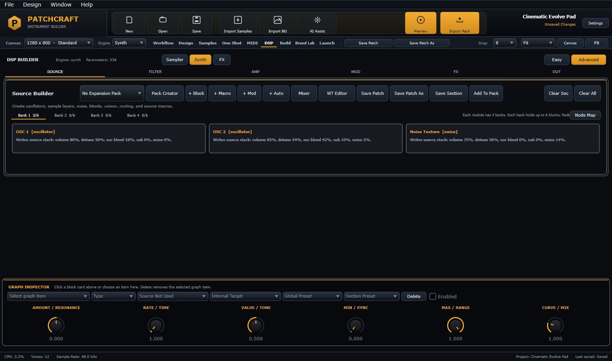
DSP Builder is the actual sound-crafting workspace: section tabs, block banks, mixer access, wavetable editor, patch save controls, graph inspector, macros, and modulation.
DSP Builder is where PatchCraft becomes a sound-design playground. It builds synths, sample processors, FX chains, modulation systems, macros, EQs, granular behavior, routing, and output logic.
Adds space, color, movement, destruction, or polish.
Out
Output gain, limiter, pan, width, routing, meters.
Final gain staging and export-safe output.
Blocks, banks, and mixers
Each module uses banks to keep complex patches organized. A bank can contain up to six blocks, which keeps the UI readable. Blocks define sound functions. The mixer blends block contributions. Do not add blocks just to fill space. Add blocks when they create audible value.
Graph Inspector
The Graph Inspector edits the selected block, macro, modulation, or route. If no item is selected, controls may be grayed out. A grayed-out control should explain why it cannot be used: missing target, disabled block, wrong engine, no selected graph item, or unsupported runtime route.
Macros
A macro is one visible performance control that moves multiple parameters. Example: a single Intensity macro can raise filter cutoff, increase drive, shorten decay, increase delay feedback, and brighten output. Macros are how you turn technical sound design into buyer-friendly controls.
Mod matrix
The mod matrix connects sources to targets. A source can be LFO, envelope, velocity, keytrack, random, MIDI CC, mod wheel, audio follower, macro, or sequencer. A target can be any supported parameter. Amount, polarity, smoothing, sync, and curve decide how strongly the source moves the target.
Quick Edit
DSP Quick Edit is for choosing which controls developers want available as fast-access parameters. Those controls can be mapped to the Design canvas or exposed in the Player. It should show useful controls, not every internal value.
Save Patch vs section presets
Save Patch: saves the complete playable instrument state.
Save Patch As: saves a new full patch/preset variation.
Section Preset: saves only one section, such as a filter chain, FX chain, wavetable source, or modulation setup.
Expansion: groups finished patches into a sellable collection.
Test / Preview: Prove the Runtime Before Export
The Test/Preview view is where the Studio instrument should behave like the exported Player: playable keyboard, active UI, mapped controls, MIDI input, tabs, meters, patterns, and runtime response.
Testing is not optional. PatchCraft products must be proven while audio is running, because the buyer will judge the instrument by how quickly it responds in a DAW. Use Preview and Test to confirm the real runtime path before exporting.
What to verify
Software keyboard produces sound.
Hardware MIDI keyboard produces sound, not only visual key highlights.
Mod wheel, expression, sustain, pitch wheel, and learned controls update the same runtime parameter model.
Tabs and containers switch visible controls correctly.
Knobs, switches, sliders, pads, drum grids, granular controls, meters, and macro controls affect the sound or runtime state they claim to control.
Preset switching displays a loading state and returns to a complete playable sound.
Sample/MIDI runtime import works if enabled for the Player.
Build Page: Create Custom Controls
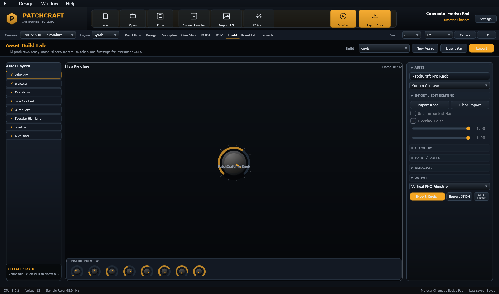
The Build page creates reusable knobs, sliders, meters, and custom assets that can be exported to the Library and reused on the Design canvas.
The Build page is PatchCraft's control factory. Use it to make knobs, sliders, meters, and other reusable interface assets. The goal is a professional library of controls that match the instrument brand.
What to build
Knobs: main synth controls, macros, tone controls, effects sends.
Meters: output, compression, pad activity, sample playback, performance feedback.
Reusable styles: one visual system per product line.
Import existing controls
Import a knob, slider, or filmstrip to edit it in PatchCraft. After editing, export it to the Library so the Design page can drag it onto the canvas. Test imported controls inside Build first, then verify they remain responsive after being used in the Player layout.
Control design rules
Keep knob sizes consistent unless a control is intentionally primary.
Labels should be detachable and independently editable.
Use double-click reset for knobs and sliders.
Make value text readable at actual Player size, not just at zoomed Studio size.
Do not over-render controls with excessive highlights that clash with artwork.
Brand Lab: White-Label the Player
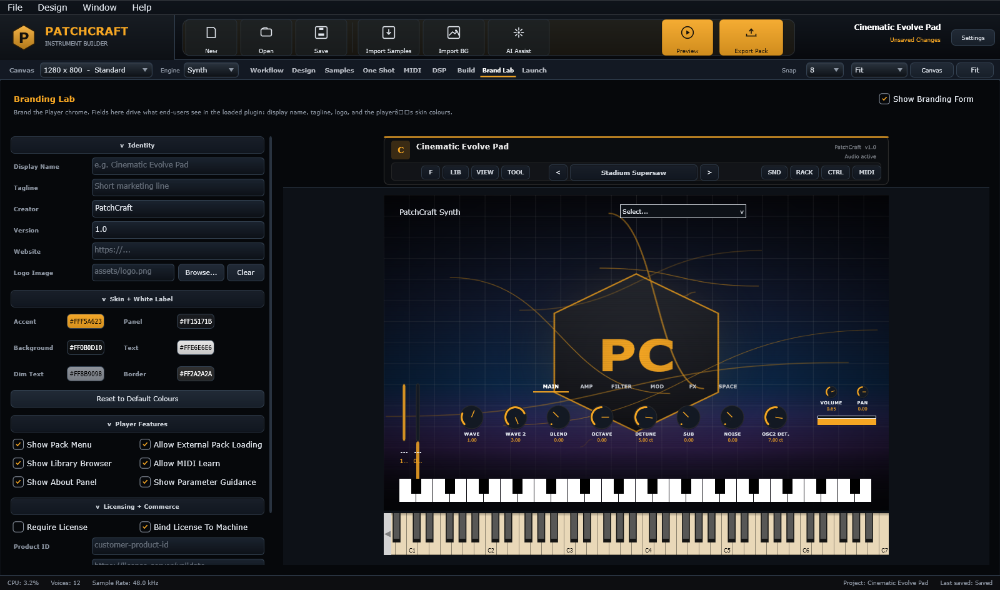
Brand Lab previews the customer-facing Player: title, toolbar, preset area, instrument body, runtime controls, keyboard, and brand settings.
Brand Lab shows how the Player will look in the buyer's DAW. It should match the runtime Player as closely as possible: title bar, top toolbar, preset navigation, library, sound editor, rack, control panel, keyboard, and full instrument body.
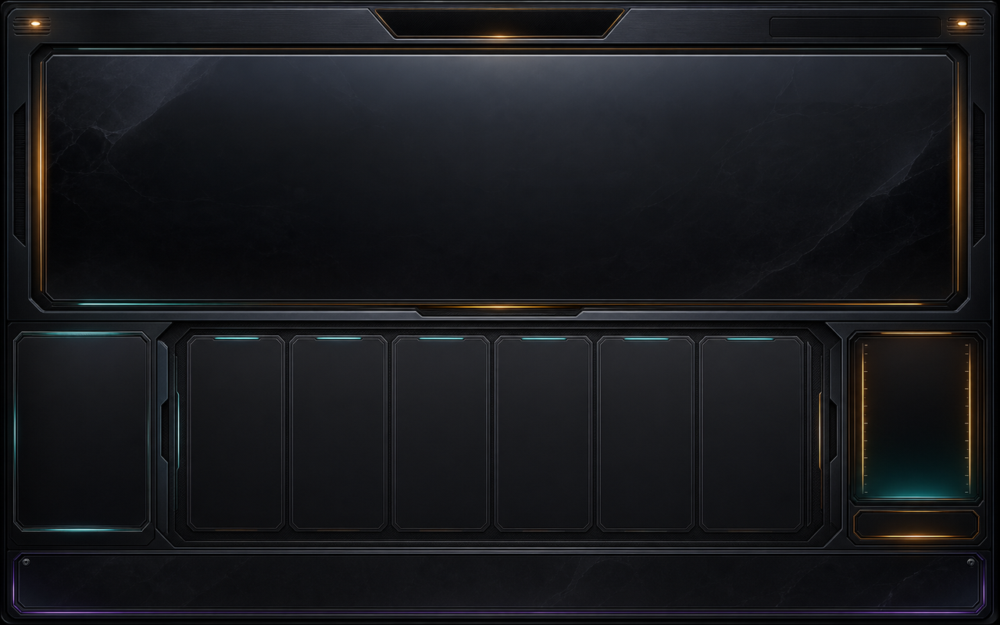
Branding is product strategy. The buyer should feel like they opened a real instrument from your company, not a generic PatchCraft shell.
Branding controls
Product name: what the buyer sees in the Player and product pages.
Creator/company: your brand identity.
Logo: compact icon or mark for the Player header.
Tagline: one sentence that explains the instrument.
Control Center: product info, license status, MIDI Learn, global settings, routing, import permissions, and support links.
Keyboard: full-width performance area for playable instruments.
Branding checklist
Product name fits without clipping.
Preset dropdown is readable and not too wide.
Toolbar icons have tooltips.
Instrument title does not sit under the menu bar.
All tabs switch in Brand Lab and exported Player.
No hidden random PatchCraft text appears over customer artwork.
Player looks professional at 100 percent zoom in a DAW.
Launch Page: Product Readiness
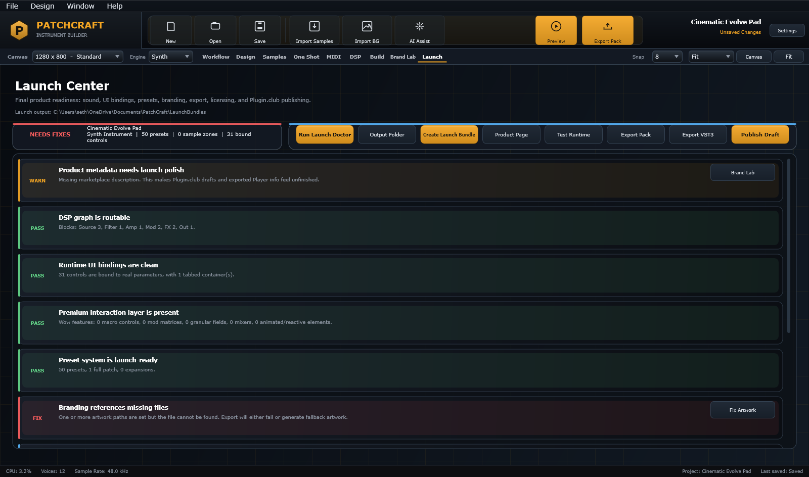
The Launch page is the release checklist: product readiness, export safety, Plugin.club publishing, licensing, installer notes, and DAW verification tasks.
Launch is the preflight system. It should tell you if the instrument is ready to sell, export, publish, and support.
Launch checks
Missing samples, missing images, missing filmstrips, or invalid asset paths.
Controls mapped to missing or internal-only parameters.
Plugin.club health: endpoint, API key, artifact type, metadata, artwork, archive.
Export types
Export
What it creates
Use case
PatchCraft Pack
A folder with manifest, layout, DSP, parameters, presets, samples, assets.
Player-loadable instrument/expansion.
Standalone VST3
A VST3 bundle with embedded pack data.
Selling a self-contained plugin product.
Player FX VST3
An FX plugin variant that processes incoming DAW audio.
FX processors, transitions, throws, EQ tools.
One Shot Pack
Rendered WAV/metadata/artwork pack.
Selling sample packs or feeding Sample Mapper.
Plugin.club Draft
Upload package and metadata to seller backend.
Direct publish workflow.
PatchCraft Player Runtime
The Player is what the end buyer experiences. Everything in Studio must ultimately prove itself in the Player.
Player top bar
File: pack actions and runtime loading options.
Library: browse installed packs, demos, expansions, and compatible instruments.
View: view and display options.
Tools: creative tools, routing, mixer, MIDI Learn, and preset actions.
Preset navigation: previous, current preset, next, with clear loading display.
Sound: open the exposed sound editor.
Rack: open multi-instrument/layer management.
Control: open product, routing, import, license, and MIDI control center.
Import: allow end users to import samples or MIDI if the instrument supports runtime content.
Play/Stop: audition internal MIDI/drum patterns when DAW transport is stopped.
MIDI Learn
In the Player, users should be able to right-click a mapped control, choose Learn, move a hardware knob/fader/pad, and bind that control. Only expose learnable controls that make sense. Internal hidden controls should not confuse buyers.
Runtime sample and MIDI import
If enabled, the Player can accept user samples and MIDI. This unlocks customer creativity: they can load their own drums, loops, one-shots, MIDI phrases, and performance data. The design must make import obvious: visible import button, drag/drop messaging, loaded-content list, playable pads/keyboard, and clear/reset behavior.
Multi-instrument Player
When multiple instruments are loaded, the Player needs layer controls: layer name, active state, volume, pan, mute, solo, MIDI channel/range, output route, compact/expanded display, and global controls. This lets buyers stack a pad with a pluck, layer drums with FX, or combine multiple patches into one performance setup.
Complete Build Recipes
Recipe 1: Pure Synth Instrument
Workflow: choose Synth Instrument.
DSP Source: add oscillator or wavetable blocks. Set wavetable family, position, unison, detune, spread, sub/noise if needed.
Filter: add low-pass or surgical EQ bands. Map cutoff/resonance/keytrack.
Brand for use on mixer inserts: clear input/output, wet/dry, gain staging.
Export Player FX VST3 and test on an FL Studio mixer insert.
Recipe 5: One Shot Pack Into Playable Instrument
One Shot Maker: import plugin or source.
Choose and audition source sound.
Render chromatic, velocity, or drum-pad one-shot pack.
Edit fades, trim silence, normalize only if needed.
Send to Sample Mapper.
Create Patch From One Shot Pack.
Add DSP and Design controls.
Package as instrument, expansion, or sample product.
Building Products People Want to Buy
PatchCraft is a product builder. A good sound is not enough. Buyers pay for clarity, inspiration, workflow, trust, and polish.
Position the product clearly
Who is it for? Trap producers, cinematic composers, EDM sound designers, sample-pack makers, worship keys players, trailer editors, lo-fi producers.
What does it do quickly? Braams, pads, drums, vocal chops, granular textures, surgical EQ, one-shot kits, motion plucks.
Why is it better? Faster workflow, unique performance controls, strong branding, real presets, drag/drop import, MIDI manipulation, high-quality UI.
What buyers expect
A fast install.
A beautiful first screen.
Great default preset.
Clear categories and preset names.
Controls that immediately change the sound.
No missing samples, no silent notes, no broken tabs.
MIDI Learn and DAW automation where it matters.
A short walkthrough video and a written quick-start guide.
Expansion strategy
Sell the main Player/instrument as the platform, then sell focused expansions. Example: Cinematic Braams Vol. 1, Neon Wavetable Bass, Lo-Fi Keys, Granular Vocals, Drum Machine Trap Kits, Ambient Motion Pads. Each expansion should have artwork, categories, tags, demo audio, and a clear promise.
Customer acquisition ideas
Publish short videos showing one patch becoming a finished beat or cue.
Give away a small free demo instrument or free expansion.
Show before/after clips for FX products.
Show MIDI and sample import features because they create buyer imagination.
Create genre-specific landing pages instead of one generic product page.
Offer developer/white-label services for customers who want custom branded Players.
Troubleshooting
Problem
Likely cause
Fix
Knob moves but sound does not change.
Control is not mapped, target parameter is missing, or DSP route is disconnected.
Open Inspector DSP Assignment, confirm parameter exists, verify DSP graph route, test while holding a note.
Control is grayed out.
Feature is unavailable for current engine, no selected block, or missing source/target.
Read the tooltip, select the correct block, enable the module, or switch engine path.
Hardware MIDI lights keys but no sound.
MIDI input reaches UI but not audio engine, wrong channel/range, no active source, or preview inactive.
Select MIDI device, enable Preview/Test, check engine/source, verify sample zones or synth source exist.
Samples import on wrong notes.
Filename parsing failed or no pitch metadata was found.
Use clear note names, run Auto Map, manually set root keys, verify C0/C3 naming convention.
Drum pads work but drum grid does not.
Grid is not routed to pad notes or transport is stopped.
Check MIDI Playground drum routing, press Player Play or DAW Play, verify pad notes.
Tabs work in Studio but not Player.
Elements are outside the tab group or export layout has unsupported group state.
Use Design tab containers correctly, test exported Player, run Launch validation.
Export blocks with missing references.
DSP graph edge, sample, image, parameter, or runtime control cannot resolve.
Fix Launch health issues before exporting. Do not ignore missing target warnings.
Plugin.club publish fails.
Endpoint, API key, backend, payload, or server issue.
Use https://plugin.club/functions/sellerImport, verify API key, inspect local payload/archive from the error dialog.
Suggested Video Course Structure
This written MasterClass is intentionally structured so it can become videos. Recommended sequence:
PatchCraft in 10 minutes
What the app is, what it exports, what the Player does.